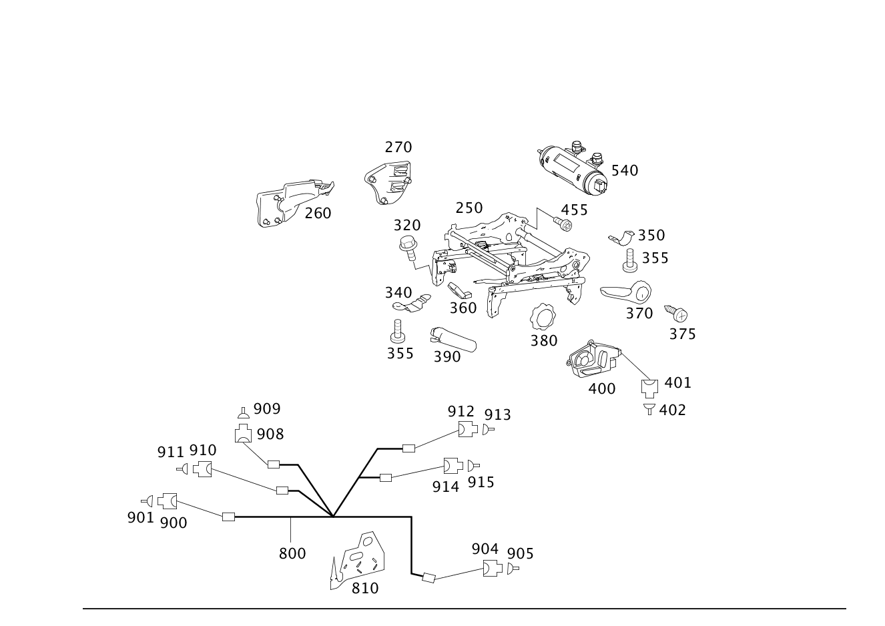

| № | Артикул | Название | Кол. | Примечание | Ограничение |
|---|---|---|---|---|---|
| 250 | A 169 910 01 81 | Регулировка сиденья (SITZEINSTELLUNG) | 1 | СЛЕВА Рулевое управление: Вправо [402] БОЛЬШЕ НЕ ПОСТАВЛЯЕТСЯ | |
| 250 | A 169 910 49 36 | Регулировка сиденья (SITZEINSTELLUNG) | 1 | СЛЕВА Рулевое управление: Влево [402] БОЛЬШЕ НЕ ПОСТАВЛЯЕТСЯ | |
| 250 | A 169 910 02 81 | Регулировка сиденья (SITZEINSTELLUNG) | 1 | СПРАВА Рулевое управление: Влево [402] БОЛЬШЕ НЕ ПОСТАВЛЯЕТСЯ | |
| 250 | A 169 910 50 36 | Регулировка сиденья (SITZEINSTELLUNG) | 1 | СПРАВА Рулевое управление: Вправо | |
| 250 | A 169 910 05 81 | Регулировка сиденья (SITZEINSTELLUNG) | 1 | СЛЕВА Рулевое управление: Вправо [402] БОЛЬШЕ НЕ ПОСТАВЛЯЕТСЯ | U57 |
| 250 | A 169 910 53 36 | Регулировка сиденья (SITZEINSTELLUNG) | 1 | СЛЕВА | U59 |
| 250 | A 169 910 54 36 | Регулировка сиденья (SITZEINSTELLUNG) | 1 | СПРАВА [402] БОЛЬШЕ НЕ ПОСТАВЛЯЕТСЯ | U59 |
| 250 | A 169 910 59 36 | Регулировка сиденья (SITZEINSTELLUNG) | 1 | СЛЕВА Рулевое управление: Вправо [402] БОЛЬШЕ НЕ ПОСТАВЛЯЕТСЯ | U57+U59 |
| 250 | A 169 910 06 81 | Регулировка сиденья (SITZEINSTELLUNG) | 1 | СПРАВА Рулевое управление: Влево [402] БОЛЬШЕ НЕ ПОСТАВЛЯЕТСЯ | U57 |
| 250 | A 169 910 60 36 | Регулировка сиденья (SITZEINSTELLUNG) | 1 | СПРАВА Рулевое управление: Влево [402] БОЛЬШЕ НЕ ПОСТАВЛЯЕТСЯ | U57+U59 |
| 250 | A 169 910 57 36 | Регулировка сиденья (SITZEINSTELLUNG) | 1 | СЛЕВА [402] БОЛЬШЕ НЕ ПОСТАВЛЯЕТСЯ | U59+221 |
| 250 | A 169 910 58 36 | Регулировка сиденья (SITZEINSTELLUNG) | 1 | СПРАВА [402] БОЛЬШЕ НЕ ПОСТАВЛЯЕТСЯ | U59+222 |
| 260 | A 169 919 01 14 | - Скоба (KLAMMER) | 1 | РАЗЪЕМ СИДЕНЬЯ СПЕРЕДИ СЛЕВА | |
| 260 | A 169 919 02 14 | - Скоба (KLAMMER) | 1 | РАЗЪЕМ СИДЕНЬЯ СПЕРЕДИ СПРАВА | |
| 270 | A 169 919 04 14 | - Скоба (KLAMMER) | 1 | РАЗЪЕМ СИДЕНЬЯ СПЕРЕДИ СЛЕВА | U57 |
| 270 | A 169 919 05 14 | - Скоба (KLAMMER) | 1 | РАЗЪЕМ СИДЕНЬЯ СПЕРЕДИ СПРАВА | U57 |
| 320 | N 910105 010009 | Винт с 6-гранной головкой (SECHSKANTSCHRAUBE) | 4 | СИД. ВОДИТ. НА КОНСОЛИ; M10X25 Рулевое управление: Влево | |
| 320 | N 910105 010009 | Винт с 6-гранной головкой (SECHSKANTSCHRAUBE) | 4 | СИД. ВОДИТ. НА КОНСОЛИ; M10X25 Рулевое управление: Вправо | -U57 |
| 320 | N 910105 010009 | Винт с 6-гранной головкой (SECHSKANTSCHRAUBE) | 4 | СИД. ВОДИТ. НА КОНСОЛИ; M10X25 Рулевое управление: Вправо | |
| 320 | N 910105 010009 | Винт с 6-гранной головкой (SECHSKANTSCHRAUBE) | 4 | СИД. ВОДИТ. НА КОНСОЛИ; M10X25 Рулевое управление: Влево | -U57 |
| 340 | A 169 912 08 14 | Держатель (HALTER) | 2 | СПЕРЕДИ | |
| 340 | A 169 912 08 14 | Держатель (HALTER) | 2 | СПЕРЕДИ | |
| 350 | A 169 912 04 14 | Держатель (HALTER) | 2 | СЗАДИ [402] БОЛЬШЕ НЕ ПОСТАВЛЯЕТСЯ | |
| 350 | A 169 912 04 14 | Держатель (HALTER) | 2 | СЗАДИ [402] БОЛЬШЕ НЕ ПОСТАВЛЯЕТСЯ | |
| 355 | A 000 990 31 11 | Винт с плоской головкой (FLACHKOPFSCHRAUBE) | 6 | ДЕРЖАТЕЛЬ НА РАМЕ СИДЕНЬЯ, СЛЕВА; M5X14 | |
| 355 | A 000 990 31 11 | Винт с плоской головкой (FLACHKOPFSCHRAUBE) | 6 | ДЕРЖАТЕЛЬ НА РАМЕ СИДЕНЬЯ, СПРАВА; M5X14 | |
| 360 | A 169 919 05 61 | Рычаг (HEBEL) | 1 | РЕГУЛИРОВКА ДЛИНЫ СИД. СЛЕВА | -221 |
| 360 | A 169 919 06 61 | Рычаг (HEBEL) | 1 | РЕГУЛИРОВКА ДЛИНЫ СИД. СПРАВА | -222 |
| 370 | A 169 919 01 61 | Рычаг (BEDIENHEBEL) | 1 | РЕГУЛИР. СИД. ПО ВЫСОТЕ СЛЕВА Рулевое управление: Влево | -221 |
| 370 | A 169 919 01 61 | Рычаг (BEDIENHEBEL) | 1 | РЕГУЛИР. СИД. ПО ВЫСОТЕ СЛЕВА Рулевое управление: Вправо | U59+-221 |
| 370 | A 169 919 02 61 | Рычаг (HEBEL) | 1 | РЕГУЛИР. СИД. ПО ВЫСОТЕ СПРАВА Рулевое управление: Вправо | -222 |
| 370 | A 169 919 02 61 | Рычаг (HEBEL) | 1 | РЕГУЛИР. СИД. ПО ВЫСОТЕ СПРАВА Рулевое управление: Влево | U59+-222 |
| 375 | N 000000 001346 | Шуруп (BLECHSCHRAUBE) | 1 | РЕГУЛИР. ВЫСОТЫ СИД.; 4.8X9.5 | -221 |
| 375 | N 000000 001346 | Шуруп (BLECHSCHRAUBE) | 1 | РЕГУЛИР. ВЫСОТЫ СИД.; 4.8X9.5 | U59+-222 |
| 380 | A 169 919 00 88 | Маховичок (HANDRAD) | 1 | U59+(-221/-222) | |
| 380 | A 169 919 00 88 | Маховичок (HANDRAD) | 1 | U59+(-221/-222) | |
| 390 | A 169 910 01 71 | Рычаг (HEBEL) | 1 | СЛЕВА, СЪЕМН. СИД. Рулевое управление: Вправо [402] БОЛЬШЕ НЕ ПОСТАВЛЯЕТСЯ | U57 |
| 390 | A 169 910 00 71 | Рычаг (HEBEL) | 1 | СПРАВА, СЪЕМН. СИД. Рулевое управление: Влево | U57 |
| 400 | A 169 820 56 10 | Переключатель (SCHALTER) | 1 | СЛЕВА | 221 |
| 400 | A 169 820 57 10 | Переключатель (SCHALTER) | 1 | СПРАВА [402] БОЛЬШЕ НЕ ПОСТАВЛЯЕТСЯ | 222 |
| 401 | A 037 545 39 28 | Штекер (STECKER) | 1 | ВЫКЛЮЧАТЕЛЬ РЕГУЛИРОВКИ СИДЕНЬЯ S22/1; 10\-PIN SLK 2.8 | |
| 401 | A 037 545 39 28 | Штекер (STECKER) | 1 | ВЫКЛ\-ТЕЛЬ ЭЛ. РЕГУЛИРОВКИ СИДЕНЬЯ S23/1; 10\-PIN SLK 2.8 | |
| 401 | A 220 545 39 28 | Корпус штекерной втулки (STECKHUELSENGEHAEUSE) | 1 | ВЫКЛЮЧАТЕЛЬ РЕГУЛИРОВКИ СИДЕНЬЯ S22/1; 4\-PIN SLK2.8 | |
| 401 | A 220 545 39 28 | Корпус штекерной втулки (STECKHUELSENGEHAEUSE) | 1 | ВЫКЛ\-ТЕЛЬ ЭЛ. РЕГУЛИРОВКИ СИДЕНЬЯ S23/1; 4\-PIN SLK2.8 | |
| 402 | A 013 545 15 26 | Контактная втулка (KONTAKTBUCHSE) | NB | ВЫКЛЮЧАТЕЛЬ РЕГУЛИРОВКИ СИДЕНЬЯ S22/1; 0.5\-0.75 MM2 SLK2.8 | |
| 402 | A 013 545 15 26 | Контактная втулка (KONTAKTBUCHSE) | NB | ВЫКЛ\-ТЕЛЬ ЭЛ. РЕГУЛИРОВКИ СИДЕНЬЯ; 0.5\-0.75 MM2 SLK2.8 | |
| 455 | A 168 911 00 71 | болт (SCHRAUBE) | 4 | СПИНКА НА РЕГУЛИР. СИДЕНЬЯ M10 X 14 MM [402] БОЛЬШЕ НЕ ПОСТАВЛЯЕТСЯ | |
| 455 | A 168 911 00 71 | болт (SCHRAUBE) | 4 | СПИНКА НА РЕГУЛИР. СИДЕНЬЯ [402] БОЛЬШЕ НЕ ПОСТАВЛЯЕТСЯ | |
| 540 | A 000 800 26 48 | Насос (PUMPE) | 1 | МУЛЬТИКОНТУРНАЯ СПИНКА, СЛЕВА Рулевое управление: Влево [402] БОЛЬШЕ НЕ ПОСТАВЛЯЕТСЯ | 404 |
| 540 | A 000 800 26 48 | Насос (PUMPE) | 1 | МУЛЬТИКОНТУР. СИД., СПРАВА Рулевое управление: Вправо [402] БОЛЬШЕ НЕ ПОСТАВЛЯЕТСЯ | 405 |
| 800 | A 169 820 58 04 | Электрический жгут | 1 | СИДЕНЬЕ ВОДИТЕЛЯ Рулевое управление: Влево | |
| 800 | A 169 820 58 04 | Электрический жгут | 1 | СИДЕНЬЕ ВОДИТЕЛЯ Рулевое управление: Влево | 873 |
| 800 | A 169 820 58 04 | Электрический жгут | 1 | СИДЕНЬЕ ВОДИТЕЛЯ Рулевое управление: Вправо | |
| 800 | A 169 820 58 04 | Электрический жгут | 1 | СИДЕНЬЕ ВОДИТЕЛЯ Рулевое управление: Вправо | 873 |
| 800 | A 169 820 60 04 | Электрический провод (ELEKTRISCHE LEITUNG) | 1 | СИДЕНЬЕ ВОДИТЕЛЯ Рулевое управление: Влево [402] БОЛЬШЕ НЕ ПОСТАВЛЯЕТСЯ | 404/(404+873) |
| 800 | A 169 820 72 04 | Электрический провод (ELEKTRISCHE LEITUNG) | 1 | СИДЕНЬЕ ВОДИТЕЛЯ Рулевое управление: Влево [402] БОЛЬШЕ НЕ ПОСТАВЛЯЕТСЯ | 221/221+873 |
| 800 | A 169 820 72 04 | Электрический провод (ELEKTRISCHE LEITUNG) | 1 | СИДЕНЬЕ ВОДИТЕЛЯ Рулевое управление: Влево [402] БОЛЬШЕ НЕ ПОСТАВЛЯЕТСЯ | 221+404/221+404+873 |
| 800 | A 169 820 78 04 | Электрический провод (ELEKTRISCHE LEITUNG) | 1 | СИДЕНЬЕ ВОДИТЕЛЯ Рулевое управление: Вправо [402] БОЛЬШЕ НЕ ПОСТАВЛЯЕТСЯ | 222/222+873 |
| 800 | A 169 820 78 04 | Электрический провод (ELEKTRISCHE LEITUNG) | 1 | СИДЕНЬЕ ВОДИТЕЛЯ Рулевое управление: Вправо [402] БОЛЬШЕ НЕ ПОСТАВЛЯЕТСЯ | 222+405/222+405+873 |
| 800 | A 169 820 60 04 | Электрический провод (ELEKTRISCHE LEITUNG) | 1 | СИДЕНЬЕ ВОДИТЕЛЯ Рулевое управление: Вправо [402] БОЛЬШЕ НЕ ПОСТАВЛЯЕТСЯ | 405/(405+873) |
| 800 | A 169 820 62 04 | Электрический провод (ELEKTRISCHE LEITUNG) | 1 | СИДЕНЬЕ ПЕР. ПАССАЖИРА Рулевое управление: Вправо | |
| 800 | A 169 820 62 04 | Электрический провод (ELEKTRISCHE LEITUNG) | 1 | СИДЕНЬЕ ПЕР. ПАССАЖИРА Рулевое управление: Вправо | 873 |
| 800 | A 169 820 62 04 | Электрический провод (ELEKTRISCHE LEITUNG) | 1 | СИДЕНЬЕ ПЕР. ПАССАЖИРА Рулевое управление: Влево | |
| 800 | A 169 820 62 04 | Электрический провод (ELEKTRISCHE LEITUNG) | 1 | СИДЕНЬЕ ПЕР. ПАССАЖИРА Рулевое управление: Влево | 873 |
| 800 | A 169 820 64 04 | Электрический провод (ELEKTRISCHE LEITUNG) | 1 | СИДЕНЬЕ ПЕР. ПАССАЖИРА Рулевое управление: Вправо | U57 |
| 800 | A 169 820 64 04 | Электрический провод (ELEKTRISCHE LEITUNG) | 1 | СИДЕНЬЕ ПЕР. ПАССАЖИРА Рулевое управление: Вправо | 873+U57 |
| 800 | A 169 820 64 04 | Электрический провод (ELEKTRISCHE LEITUNG) | 1 | СИДЕНЬЕ ПЕР. ПАССАЖИРА Рулевое управление: Влево | U57 |
| 800 | A 169 820 64 04 | Электрический провод (ELEKTRISCHE LEITUNG) | 1 | СИДЕНЬЕ ПЕР. ПАССАЖИРА Рулевое управление: Влево | 873+U57 |
| 800 | A 169 820 70 04 | Электрический провод (ELEKTRISCHE LEITUNG) | 1 | СИДЕНЬЕ ПЕР. ПАССАЖИРА Рулевое управление: Влево [402] БОЛЬШЕ НЕ ПОСТАВЛЯЕТСЯ | 222/222+873 |
| 800 | A 169 820 76 04 | - Электрический провод (ELEKTRISCHE LEITUNG) | 1 | СИДЕНЬЕ ПЕР. ПАССАЖИРА Рулевое управление: Вправо [402] БОЛЬШЕ НЕ ПОСТАВЛЯЕТСЯ | 221/221+873 |
| 810 | A 169 821 14 89 | Кабелепровод (KABELFUEHRUNG) | 1 | КАБЕЛЬ\-КАНАЛ СЛЕВА [402] БОЛЬШЕ НЕ ПОСТАВЛЯЕТСЯ | 221 |
| 810 | A 169 821 14 89 | Кабелепровод (KABELFUEHRUNG) | 1 | КАБЕЛЬ\-КАНАЛ СПРАВА [402] БОЛЬШЕ НЕ ПОСТАВЛЯЕТСЯ | 222 |
| 900 | A 050 545 24 28 | - Штекер (STECKER) | 1 | КОНТАКТ. НАКЛАДКА СИД. X55/3 X55/4 ,P3385 | |
| 900 | A 050 545 24 28 | - Штекер (STECKER) | 1 | КОНТАКТ. НАКЛАДКА СИД. X55/3 | |
| 900 | A 050 545 24 28 | - Штекер (STECKER) | 1 | КОНТАКТ. НАКЛАДКА СИД. X55/4 | |
| 901 | A 000 540 59 05 | - Электрический жгут (ELEKTRISCHER LEITUNGSSATZ) | NB | КОНТАКТ. НАКЛАДКА СИД. X55/3 X55/4; 1.0 MM2 LKS1.5 [T774] СОЕДИНИТЕЛИ СЛЕДУЕТ ЗАКАЗЫВАТЬ В СООТВЕТСТВИИ С ОБЩИМ ПОПЕРЕЧНЫМ СЕЧЕНИЕМ СОЕДИНЯЕМЫХ ПРОВОДОВРУКОВОДСТВО ПО РЕМОНТУ СМ. WIS. | |
| 901 | A 000 540 59 05 | - Электрический жгут (ELEKTRISCHER LEITUNGSSATZ) | NB | КОНТАКТ. НАКЛАДКА СИД.; 1.0 MM2 LKS1.5 | |
| 901 | A 000 540 60 05 | - Электрический жгут (ELEKTRISCHER LEITUNGSSATZ) | NB | КОНТАКТ. НАКЛАДКА СИД. X55/3 X55/4; 2.5 MM2 LKS [T774] СОЕДИНИТЕЛИ СЛЕДУЕТ ЗАКАЗЫВАТЬ В СООТВЕТСТВИИ С ОБЩИМ ПОПЕРЕЧНЫМ СЕЧЕНИЕМ СОЕДИНЯЕМЫХ ПРОВОДОВРУКОВОДСТВО ПО РЕМОНТУ СМ. WIS. | |
| 901 | A 000 540 60 05 | - Электрический жгут (ELEKTRISCHER LEITUNGSSATZ) | NB | КОНТАКТ. НАКЛАДКА СИД.; 2.5 MM2 LKS | |
| 904 | A 008 545 06 26 | - Корпус штекерной втулки (STECKHUELSENGEHAEUSE) | 1 | МЕХАНИЗМ РЕГУЛИРОВКИ СПИНКИ СИДЕНЬЯ M27/5 | |
| 904 | A 008 545 06 26 | - Корпус штекерной втулки (STECKHUELSENGEHAEUSE) | 1 | РЕГУЛИР. СПИНКИ ЭЛЕКТР. | |
| 905 | A 004 545 53 26 | - Контактная пружина | NB | МЕХАНИЗМ РЕГУЛИРОВКИ СПИНКИ СИДЕНЬЯ; 1.5\-2.5 MM2 JPT | |
| 905 | A 004 545 53 26 | - Контактная пружина | NB | РЕГУЛИР. СПИНКИ ЭЛЕКТР.; 1.5\-2.5 MM2 JPT | |
| 908 | A 220 545 96 28 | - Штекер (STECKER) | 1 | РЕГУЛИР. ВЫСОТЫ СИД., СЗАДИ M27/2; 4\-PIN JPT, MT3 | |
| 908 | A 220 545 96 28 | - Штекер (STECKER) | 1 | РЕГУЛИР. ВЫСОТЫ СИД., СЗАДИ M28/2; 4\-PIN JPT, MT3 | |
| 909 | A 004 545 53 26 | - Контактная пружина | NB | РЕГУЛИР. ВЫСОТЫ СИД., СЗАДИ; 1.5\-2.5 MM2 JPT | |
| 910 | A 210 545 65 28 | - Штекер (STECKER) | 1 | МУЛЬТКОНТУР. СПИНКА; СИД. ВОДИТ. M28/6; 6\-PIN | |
| 911 | A 004 545 53 26 | - Контактная пружина | NB | МУЛЬТКОНТУР. СПИНКА; СИД. ВОДИТ.; 1.5\-2.5 MM2 JPT | |
| 912 | A 220 545 96 28 | - Штекер (STECKER) | 1 | РЕГУЛИР. СИДЕН., ПРОДОЛЬН. M27/1; 4\-PIN JPT, MT3 | |
| 912 | A 220 545 96 28 | - Штекер (STECKER) | 1 | РЕГУЛИР. СИДЕН., ПРОДОЛЬН. M28/1; 4\-PIN JPT, MT3 | |
| 913 | A 004 545 53 26 | - Контактная пружина | NB | РЕГУЛИР. СИДЕН., ПРОДОЛЬН.; 1.5\-2.5 MM2 JPT | |
| 914 | A 220 545 96 28 | - Штекер (STECKER) | 1 | РЕГУЛИР. ВЫСОТЫ СИД., СПЕРЕДИ M27/3; 4\-PIN JPT, MT3 | |
| 914 | A 220 545 96 28 | - Штекер (STECKER) | 1 | РЕГУЛИР. ВЫСОТЫ СИД., СПЕРЕДИ M28/3; 4\-PIN JPT, MT3 | |
| 915 | A 004 545 53 26 | - Контактная пружина | NB | РЕГУЛИР. ВЫСОТЫ СИД., СПЕРЕДИ; 1.5\-2.5 MM2 JPT |
Позиций: 94 · подписано на схемах: 94 · колесо — плавный зум в курсор, перетаскивание — пан, двойной клик — зум, клик по артикулу — скопировать · наведите на строку или цифру на схеме — подсветка связки, клик — закрепить.